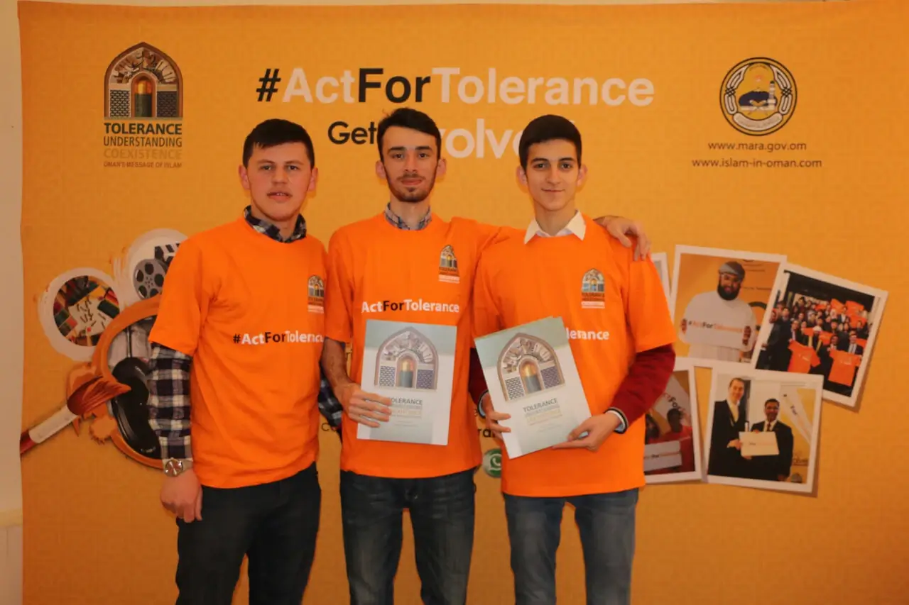
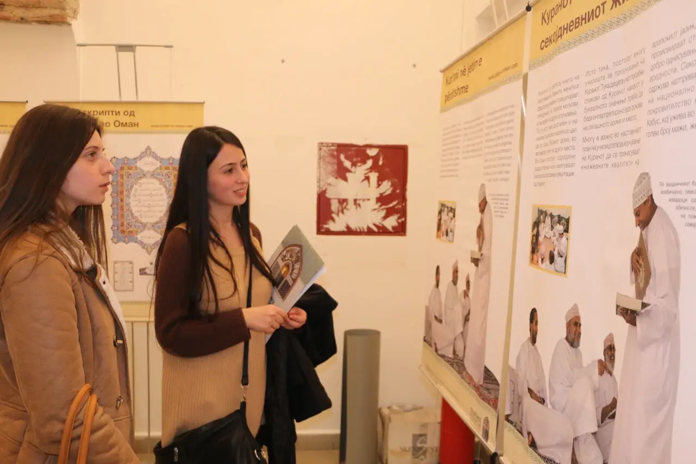

Islamic Civilisation Center, Skopje, Macedonia 2015
March 09 through March 19, 2015
The exhibition “Message of Islam from Oman” opened in the Macedonian capital Skopje, under the auspices of Dr Zoran Ilievski, political advisor to the President of the Republic of Macedonia in the Macedonian National Museum.
Sheikh Benyamin Idris, head of the Islamic Civilisation Center in the Republic of Macedonia, expressed his thanks to the Sultanate for conducting this exhibition in collaboration with the Islamic Civilisation Center in Macedonia, stressing the role of these activities in reminding the humanity of the importance of coexistence, understanding and tolerance.
|  |  |
|---|
Among the main activities of the exhibition, Professor Fred Mouhic presented a paper on the Philosophical Vision on the East and West.
The exhibition included 48 panels that were on display in Macedonian and Albanian and 20 pictures by Omani photographers about life in Oman, paintings from the Omani Fine Art Society, and calligraphy. In addition, some of Omani artifacts and features of life in the Sultanate in the past and present were showcased.
An Omani Book Corner was held on the sidelines of the exhibition. The books focus on civilisational communication, deepening of the common understanding of human values, including the al Tafahum (Understanding) magazine issued by the Ministry of Awqaf and Religious Affairs.
Please visit our Virtual Global Exhibition in your preferred language